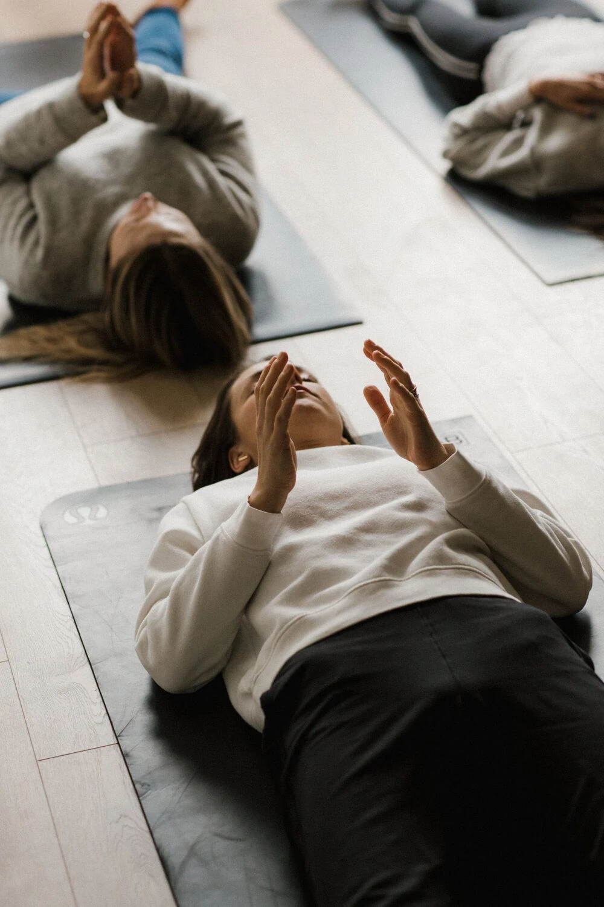

Masaż · joga · uważność
Zwolnij.
Wróć do siebie.
Indywidualna praca z ciałem i spokojna praktyka ruchu. Bez pośpiechu, z szacunkiem do Twoich potrzeb i możliwości.
Mniej pośpiechu. Więcej uwagi.
Dobre samopoczucie
zaczyna się od kontaktu.
Każde ciało ma własną historię i własne tempo. Dlatego dobieram technikę, intensywność i czas do tego, czego potrzebujesz w danym momencie. Zaczynam od rozmowy, uważności i poznania Twoich oczekiwań.
Dwie formy pracy z ciałem
Wybierz to,
czego potrzebujesz.
Czasem potrzebujesz dotyku i rozluźnienia. Innym razem, ruchu, oddechu i spokojnej praktyki. Zacznij od tego, co dziś jest Ci najbliższe.
Relaks · rozluźnienie · regeneracja
Wybierz masaż
według swoich potrzeb.
Nie musisz znać nazw technik. Zacznij od tego, co chcesz poczuć: odpocząć, rozluźnić napięte mięśnie, zadbać o twarz lub spróbować masażu tajskiego.
Co jest Ci teraz najbardziej potrzebne?

Ruch bez presji. Praktyka bez porównań.Praktyka dopasowana do Ciebie
Nie musisz być
bardziej elastyczna.
Wystarczy zacząć.
Joga to nie konkurs na najtrudniejszą pozycję. To połączenie ruchu, oddechu i chwili uważności. Ćwiczenia dobieram do Twojego doświadczenia, samopoczucia i celów, od pierwszego spotkania po regularną praktykę.
Pierwszy raz na macie?
Nie musisz być rozciągnięta. Nie musisz mieć doświadczenia.
Nie ma znaczenia, ile masz lat, jaki masz rozmiar ubrania ani czy kiedykolwiek ćwiczyłaś. Zaczynamy od prostych, dostępnych ruchów i spokojnego oddechu. Tempo oraz warianty pozycji dopasowuję do Ciebie.
Dźwięk i wyciszenie
Praktyka, która kończy się spokojem.
W wybranych zajęciach korzystam z mis tybetańskich i delikatnych dźwięków inspirowanych naturą, szumem morza, fal i spokojnego przypływu. To moment, by skierować uwagę do wewnątrz, odetchnąć i łagodnie zakończyć praktykę.
Element relaksacji · nie wymaga wcześniejszego doświadczeniaSpotkajmy się na macie
Wybierz format praktyki
Online, indywidualnie lub w małej grupie. Znajdź formę, która pasuje do Twojego rytmu.
Zajęcia odbywają się po wcześniejszym uzgodnieniu terminu. Godzinę drugiej grupy porannej oraz czas pierwszego spotkania online ustalimy bezpośrednio z Inną.
Poznajmy się
Cześć, jestem Ina.
Jestem masażystką i instruktorką jogi. Pracuję z osobami, które chcą poczuć mniej napięcia, odzyskać swobodę ruchu lub po prostu znaleźć czas dla siebie. Prowadzę sesje spokojnie i uważnie, po polsku lub rosyjsku.
Każde spotkanie zaczynam od rozmowy. Nie narzucam jednego tempa ani jednej techniki, dobieram je do Twoich potrzeb i możliwości.
Umów pierwsze spotkanieCertyfikaty i kursy
Nauka, którą
widać w praktyce.
Doskonalenie technik i regularne szkolenia są częścią mojej pracy. Poniżej znajdziesz certyfikaty ukończonych kursów masażu tajskiego.
Przed spotkaniem
Najpierw rozmowa.
Potem dobry wybór.
Przed sesją porozmawiamy o Twoich oczekiwaniach, samopoczuciu i ewentualnych ograniczeniach. Dzięki temu łatwiej dobrać odpowiednią usługę i jej intensywność.
Zapytanie o termin
Wybierz dogodny czas
Wybierz usługę, wariant i preferowany termin. Po wysłaniu otworzy się WhatsApp z przygotowaną wiadomością.